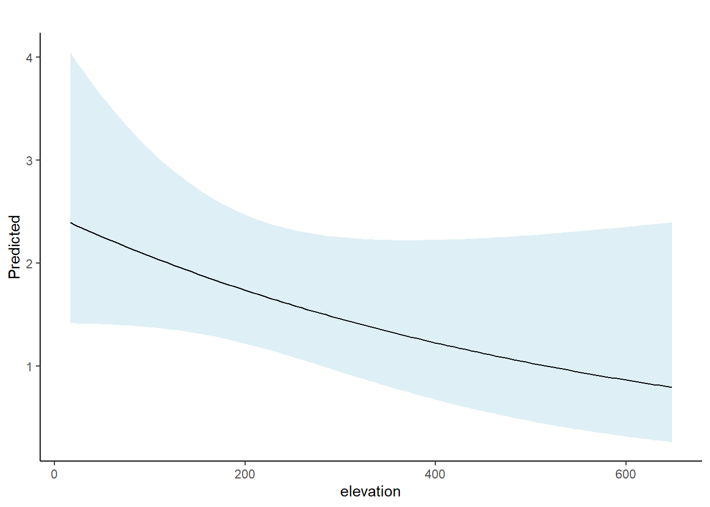

library(unmarked)
library(tidyverse)
library(AICcmodavg)Clase 3: Modelar abundancia con muestreo de distancia jerárquico
El muestreo por distancias (Distance Sampling, DS) es uno de los métodos estadísticos más utilizados en ecología para estimar la densidad o el tamaño poblacional (Burnham et al., 1980; Buckland et al., 2001, 2004a; Williams et al., 2002). El muestreo por distancias convencional (CDS: Buckland et al., 2001) utiliza información sobre distancias observadas para estimar la probabilidad de detección, agrupando los datos entre unidades de muestreo. Por otro lado, en un marco jerárquico formal, se emplean modelos paramétricos para describir la variación en la abundancia entre unidades de muestreo. Siguiendo las ideas básicas de los capítulos 6 y 7, tiene sentido proporcionar un modelo explícito para la variación del tamaño poblacional local N, es decir, el tamaño poblacional en las unidades de muestreo espacial. A este enfoque lo denominamos “muestreo por distancias jerárquico” (HDS). Al especificar un modelo para esta variable latente, se pueden construir modelos explícitos para los datos de muestreo por distancias que consideren la variación en el tamaño poblacional (o la densidad local) entre unidades de muestreo, facilitando así la inferencia sobre factores que influyen en la variación espacial de la abundancia o permitiendo realizar predicciones espaciales explícitas de la abundancia.
Aunque el muestreo por distancias convencional está muy consolidado en ecología y ciencias de la vida silvestre, el HDS ha existido solo durante unos pocos años. Dos artículos clave han desarrollado las ideas del HDS. Hedley y Buckland (2004) adoptaron un procedimiento de estimación en dos etapas: primero, emplearon el modelo habitual de muestreo por distancias para estimar la probabilidad de detección agrupando los datos entre unidades de muestreo y, en una segunda etapa, ajustaron un modelo (por ejemplo, un GLM de Poisson con un offset basado en la probabilidad de detección) al conteo observado de individuos n para cada una de las S unidades de muestreo. Miller et al. (2013a) denominaron a esta metodología “modelado de superficies de densidad” (Density Surface Modeling) y describieron un paquete en R llamado dsm e implementado en el popular programa Distance (Thomas et al., 2010).
Royle et al. (2004) desarrollaron el HDS como un modelo jerárquico formal en el que los dos componentes (detección y abundancia) se estiman simultáneamente en un solo modelo jerárquico, análogo al marco de modelos de mezcla binomial o multinomial N. La metodología HDS se implementa en unmarked utilizando las funciones distsamp y gdist.
El método CDS tiene cuatro supuestos principales: (1) los animales están distribuidos uniformemente en el espacio; (2) la probabilidad de detección es función de la distancia y es igual a 1 en distancia 0; (3) los individuos son detectados en su ubicación original, es decir, no hay movimiento de respuesta; y (4) las distancias se miden sin error. Generalmente, el supuesto (1) no se declara explícitamente, pero se asume que los puntos o transectos de muestreo están distribuidos aleatoriamente (Buckland et al., 2001, p. 29).
Muestreo por distancias convencional
Primero desarrollamos los conceptos básicos y los detalles técnicos del muestreo de distancias “clásico”, considerando la replicación espacial y los modelos jerárquicos. Una forma sencilla de motivar el muestreo de distancias es pensar en nuestro estimador heurístico de N, derivado al resolver la relación:
\[E(n) = pN\] Por lo tanto, podemos estimar N a partir de un conteo de muestra y una probabilidad de detección p, que describe la probabilidad de que un objeto (o animal) aparezca en nuestra muestra. La idea principal es estimar la probabilidad de detección de objetos como una función de la distancia, especificando una función de detección g(x; θ), que describe la probabilidad de detección en función de la distancia (x) y de un parámetro (θ). De esta forma, la función de detección es un modelo para la probabilidad de detección de un objeto, condicionada a su distancia del observador x, ejemplo g(x,θ)=P(y=1|x), en nuestro concepto habitual de probabilidades condicionales, donde y es una variable de Bernoulli que indica detección (y=1) o no detección (y=0).
La notación tradicional puede resultar un poco confusa porque si solo escribimos g(x;θ), podría parecer una distribución de probabilidad para x, lo cual no es correcto. Más bien, representa el parámetro de una función de masa de probabilidad de Bernoulli para la variable y, es decir, si un objeto es detectado o no, condicionado a x. Por esta razón, cuando queremos ser claros, escribimos esto como P(y=1∣x), para indicar que se trata de la probabilidad de un evento, es decir, ser detectado.
¿Cómo se relaciona p con la función de detección g(x;θ)?
Es la probabilidad de detección marginal o promedio (es decir, p), que es la probabilidad de que un individuo en la población general aparezca en la muestra. Esto se calcula promediando g(x;θ) sobre todos los valores posibles de x.
Formalmente, el cálculo es:
\[p \equiv Pr(y=1) = \int g(x; \theta)[x] \, dx\]
Nota que el promedio se realiza con respecto a la densidad de probabilidad para x, denotada aquí como [x] (usando la notación de corchetes establecida), aunque aún no hemos especificado esta cantidad. Por lo tanto, el modelo básico de muestreo por distancia tiene dos componentes explícitos y esenciales:
El “modelo de observación”, que describe cómo los individuos aparecen en la muestra, caracterizado por la función g(x;θ).
El “modelo de proceso” [x], que describe cómo los objetos en la población están distribuidos con respecto al observador o al transecto.
Muestreo por distancia jerárquico (HDS).
Ahora pasamos de los elementos básicos de los modelos convencionales de muestreo por distancia a situaciones en las que se tienen datos de muestreo por distancia recopilados en S ubicaciones espaciales, generalmente en transectos o puntos de conteo, aunque también podríamos tener una mezcla de ambos, o incluso formas inusuales o transectos irregulares. La forma tradicional de abordar esto en el muestreo por distancia es agrupar los datos de distancia de las S ubicaciones espaciales y estimar el/los parámetro(s) de la función de detección, por ejemplo, σ para un modelo medio-normal. Esto se utiliza para obtener una estimación de la densidad, y luego la varianza se basa en la varianza de la tasa de encuentros, que sí utiliza algo de información de las unidades de muestreo. Sin embargo, el muestreo por distancia convencional no aborda directamente los problemas de inferencia espacial, ya sea en términos de modelar las ubicaciones de los puntos o la densidad local entre unidades de muestreo, o de hacer predicciones explícitas en otros transectos o ubicaciones de puntos. Argumentamos que modelar la variación en N entre las unidades de muestreo es fundamental y, de hecho, a menudo es el principal interés en los estudios que usan el muestreo por distancia. Por lo tanto, los modelos HDS deberían estar en la caja de herramientas de todo ecólogo.
Los modelos que tratamos aquí asumen que Ns es el tamaño poblacional de la unidad de muestreo espacial s, y no hacen supuestos explícitos sobre la variación de la densidad “dentro de la unidad de muestreo”. Más bien, asumen que el valor promedio de las covariables definido para la unidad de muestreo es significativo para explicar la variación entre las unidades de muestreo. Así, cuando asumimos que Ns∼Poisson(λs), el parámetro λs es constante para las ubicaciones de muestreo y representa la media para la unidad de muestreo. Esto no significa que los modelos HDS asuman que la densidad es constante dentro de una unidad de muestreo, sino que la densidad agregada se modela adecuadamente con las covariables definidas para la unidad de muestreo.
Ejercicio: estimación del tamaño de la población global del island scrub-jay (issj)
El Island scrub-jay (Aphelocoma insularis) es una especie endémica de la Isla Santa Cruz, California, y de interés para la conservación por parte del Servicio de Parques Nacionales (NPS) y otras organizaciones debido a su distribución extremadamente localizada y a informes previos sobre tamaños poblacionales bajos y en declive. T. S. Sillett y otros iniciaron un muestreo a nivel de toda la isla en 2008 para obtener una estimación estadística del tamaño poblacional. El estudio fue reportado en Sillett et al. (2012). Los datos del Island scrub-jay están disponibles en unmarked con el comando data(fssj).
Los datos corresponden a conteos puntuales de muestreo por distancia en 307 ubicaciones de conteo, con conteos realizados hasta 300 m de distancia. Para el análisis, los datos originales de distancia fueron agrupados en tres clases de 100 m, ya que se observó que los pájaros cercanos respondían al observador (acercándose, lo que representaba un movimiento de respuesta). Se consideró que las clases de distancia amplias deberían mitigar ese efecto.
Los objetivos del estudio fueron:
Estimar el tamaño global de la población.
Hacer predicciones de E(N) bajo paisajes alternativos o históricos.
Hasta hace poco, la isla había sido intensamente pastoreada por ganado, pero un esfuerzo intenso de erradicación eliminó exitosamente el ganado, lo que permitió que la vegetación volviera a condiciones históricas. Sin embargo, contamos con un mapa de vegetación de la isla en su estado de intenso pastoreo, y queremos hacer una declaración hipotética sobre cuántos scrub-jays podrían haber existido bajo esas condiciones.
data(issj)y <- as.matrix(issj[,c(1:3)])
covs <- data.frame(issj[,c("elevation", "forest", "chaparral")])
area <- pi*300^2 / 100^2 # area en hectareas
jay_umf <- unmarkedFrameDS(y = y,
siteCovs = covs,
dist.breaks = c(0, 100, 200, 300),
unitsIn = "m",
survey = "point")jay_m1 <- distsamp(~chaparral ~chaparral + elevation,
data = jay_umf, keyfun = "halfnorm",
output = "abund")
summary(jay_m1)
Call:
distsamp(formula = ~chaparral ~ chaparral + elevation, data = jay_umf,
keyfun = "halfnorm", output = "abund")
Abundance (log-scale):
Estimate SE z P(>|z|)
(Intercept) -0.17551 0.311368 -0.564 5.73e-01
chaparral 4.12031 0.621641 6.628 3.40e-11
elevation -0.00205 0.000724 -2.832 4.63e-03
Detection (log-scale):
Estimate SE z P(>|z|)
(Intercept) 5.02 0.160 31.4 1.09e-216
chaparral -1.07 0.316 -3.4 6.86e-04
AIC: 964.676
Number of sites: 307
optim convergence code: 0
optim iterations: 172
Bootstrap iterations: 0
Survey design: point-transect
Detection function: halfnorm
UnitsIn: m
UnitsOut: ha Utilizando gdistsamp
jay_gd_umf <- unmarkedFrameGDS(y = y,
siteCovs = covs,
numPrimary = 1,
dist.breaks = c(0, 100, 200, 300),
unitsIn = "m",
survey = "point")
jay_gd_m1 <- gdistsamp(lambdaformula = ~chaparral + elevation, phiformula = ~1, pformula = ~chaparral,
data = jay_gd_umf, keyfun = "halfnorm",
output = "abund", mixture = "NB")summary(jay_gd_m1)
Call:
gdistsamp(lambdaformula = ~chaparral + elevation, phiformula = ~1,
pformula = ~chaparral, data = jay_gd_umf, keyfun = "halfnorm",
output = "abund", mixture = "NB")
Abundance (log-scale):
Estimate SE z P(>|z|)
(Intercept) -0.24411 0.36814 -0.663 5.07e-01
chaparral 4.23251 0.76060 5.565 2.63e-08
elevation -0.00174 0.00116 -1.502 1.33e-01
Detection (log-scale):
Estimate SE z P(>|z|)
(Intercept) 4.924 0.126 39.22 0.00000
chaparral -0.872 0.251 -3.47 0.00052
Dispersion (log-scale):
Estimate SE z P(>|z|)
-1.1 0.215 -5.13 2.86e-07
AIC: 704.1823
Number of sites: 307
optim convergence code: 0
optim iterations: 57
Bootstrap iterations: 0 AIC(jay_gd_m1) numeric(0)AIC(jay_m1)numeric(0)fitstats <- function(Mod_global2) {
observed <- getY(Mod_global2@data)
expected <- fitted(Mod_global2)
resids <- residuals(Mod_global2)
sse <- sum(resids^2,na.rm=TRUE)
chisq <- sum((observed - expected)^2 / expected,na.rm=TRUE)
freeTuke <- sum((sqrt(observed) - sqrt(expected))^2,na.rm=TRUE)
out <- c(SSE=sse, Chisq=chisq, freemanTukey=freeTuke)
return(out)
}
(pb <- parboot(jay_gd_m1, fitstats, nsim=100, report=1))
cHat_pb <- pb@t0[2] / mean(pb@t.star[,2])
cHat_pbgetN <- function(fm, newdata= NULL)
sum(predict(fm, type = "lambda", newdata = newdata)[,1])getN(jay_gd_m1)[1] 927.1628# Estimador bayes empirico de la distribucion posterior
re.jay <- ranef(jay_gd_m1)
sum(bup(re.jay, "mean"))[1] 826.0171chaparral_df <- data.frame(chaparral = seq(min(issj$chaparral, na.rm = TRUE),
max(issj$chaparral, na.rm = TRUE),
length = 100),
elevation = mean(issj$elevation))
elevation_df <- data.frame(elevation = seq(min(issj$elevation, na.rm = TRUE),
max(issj$elevation, na.rm = TRUE),
length = 100),
chaparral = mean(issj$chaparral))
chaparral_pre <- predict(jay_gd_m1, newdata= chaparral_df,
appendData = TRUE,
type = "lambda")
elevation_pre <- predict(jay_gd_m1, newdata= elevation_df,
appendData = TRUE,
type = "lambda")ggplot(data = chaparral_pre, aes(x= chaparral, y= Predicted))+
geom_ribbon(aes(ymin = lower, ymax= upper),
fill = "lightblue", alpha = 0.4)+
geom_line()+
labs(title = "")+
theme_classic()
ggplot(data = elevation_pre, aes(x= elevation, y= Predicted))+
geom_ribbon(aes(ymin = lower, ymax= upper),
fill = "lightblue", alpha = 0.4)+
geom_line()+
labs(title = "")+
theme_classic()